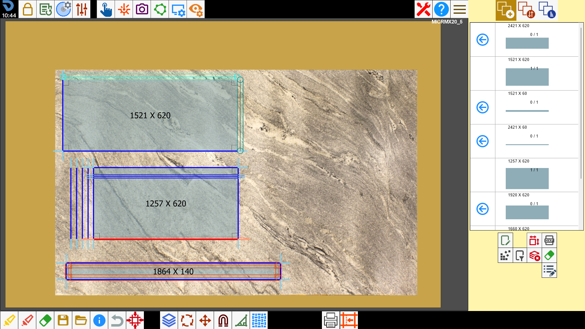

PIECE CREATION - CSV - WORKINGS
Disponendo di un file .csv con campi da L1 a L4 opportunamente compilati, è possibile importare pezzi rettangolari con lavorazioni già applicate.

VIDEO
ALLEGATI

Disponendo di un file .csv con campi da L1 a L4 opportunamente compilati, è possibile importare pezzi rettangolari con lavorazioni già applicate.
